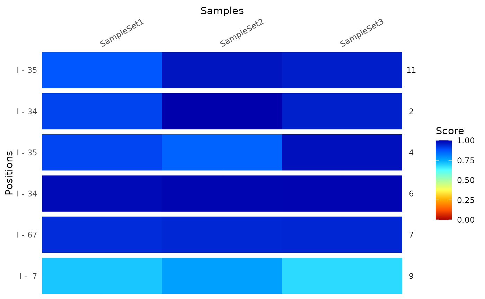

To compare data of different samples, a
ModifierSet can be used. To select the data
alongside the transcripts and their positions a
GRanges or a
GRangesList needs to be provided.
In case of a GRanges object, the parent column must match the
transcript names as defined by the out put of ranges(x), whereas in
case of a GRangesList the element names must match the transcript
names.
compare(x, name, pos = 1L, ...) compareByCoord(x, coord, ...) plotCompare(x, name, pos = 1L, normalize, ...) plotCompareByCoord(x, coord, normalize, ...) # S4 method for ModifierSet compare(x, name, pos = 1L, normalize, ...) # S4 method for ModifierSet,GRanges compareByCoord(x, coord, normalize, ...) # S4 method for ModifierSet,GRangesList compareByCoord(x, coord, normalize, ...) # S4 method for ModifierSet plotCompare(x, name, pos = 1L, normalize, ...) # S4 method for ModifierSet,GRanges plotCompareByCoord(x, coord, normalize, ...) # S4 method for ModifierSet,GRangesList plotCompareByCoord(x, coord, normalize, ...)
| x | a |
|---|---|
| name | Only for |
| pos | Only for |
| ... | optional parameters:
|
| coord | coordinates of position to subset to. Either a |
| normalize | either a single logical or character value. If it is a
character, it must match one of the names in the |
compareByCoord returns a
DataFrame and
plotCompareByCoord returns a ggplot object, which can be
modified further. The DataFrame contains columns per sample as well
as the columns names, positions and mod incorporated
from the coord input. If coord contains a column
Activity this is included in the results as well.
data(msi,package="RNAmodR") # constructing a GRanges obejct to mark positive positions mod <- modifications(msi) coord <- unique(unlist(mod)) coord$score <- NULL coord$sd <- NULL # return a DataFrame compareByCoord(msi,coord)#> DataFrame with 6 rows and 6 columns #> SampleSet1 SampleSet2 SampleSet3 names positions mod #> <numeric> <numeric> <numeric> <factor> <factor> <character> #> 1 0.900932 0.998134 0.953651 2 34 I #> 2 0.899622 0.856241 0.976928 4 35 I #> 3 0.984035 0.992012 0.993128 6 34 I #> 4 0.934553 0.942905 0.943773 7 67 I #> 5 0.709758 0.766484 0.681451 9 7 I #> 6 0.874027 0.971474 0.954782 11 35 I# plot the comparison as a heatmap plotCompareByCoord(msi,coord)